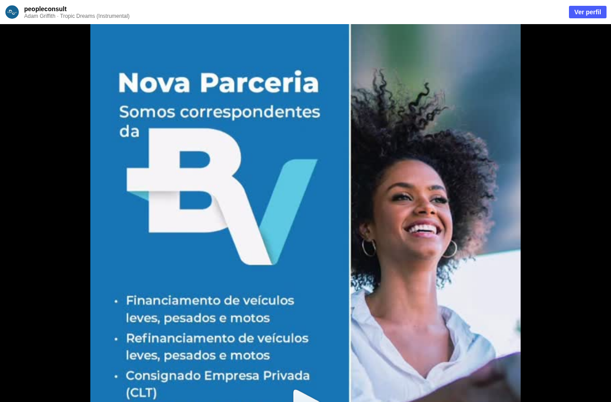
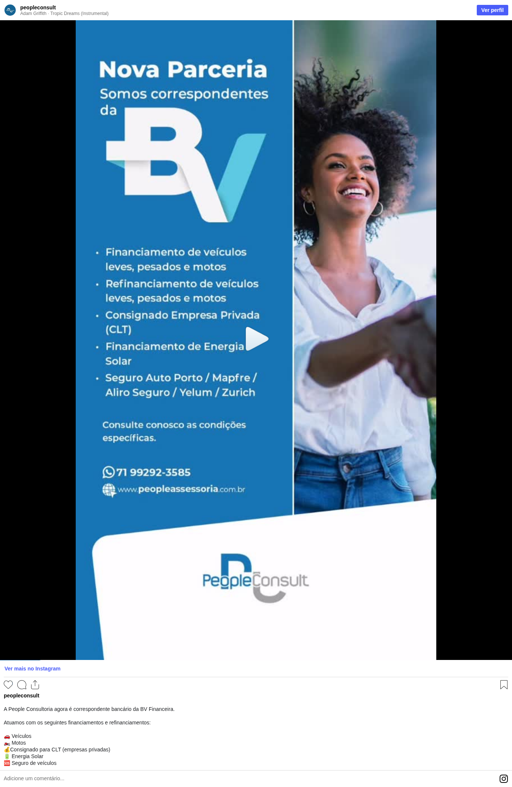

Sistema de Investigação de Marca e Identidade Online
https://www.instagram.com/reel/DOGPp8OAJxM/
Prioridade: MEDIUM · Cenário: B_AMBIGUOUS_COMMUNICATION · Revisão humana: PENDING
O anúncio no Instagram da People Consultoria informa legitimamente atuar como correspondente bancário da BV Financeira para múltiplos produtos de crédito. Não há tentativa de se passar pelo banco, mantendo sua marca própria na peça. Contudo, em virtude do destaque conferido à marca BV e da ausência de dados regulatórios mandatórios da Resolução CMN nº 4.935/2021 (CNPJ da empresa e canal de ouvidoria da instituição), o caso classifica-se como comunicação ambígua pendente de regularização formal. [Revisor: CONFIRM] A publicação no Instagram pertence à People Consultoria (promotora/assessoria financeira), público-alvo prioritário de fiscalização de COBANs. A peça publicitária divulga atuação como correspondente bancário da BV Financeira com destaque visual expressivo ao logotipo do Banco BV, identificando sua marca própria, porém sem fornecer o CNPJ do correspondente e os canais de ouvidoria da instituição bancária, em desconformidade com os deveres de transparência da Resolução CMN nº 4.935/2021. Portanto, confirma-se a hipótese de REVIEW_REQUIRED.


| Ref | Tipo | Local | Conteúdo |
|---|---|---|---|
| E-URL | domain | url | URL final: https://www.instagram.com/reel/DOGPp8OAJxM/ (domínio: www.instagram.com) |
| E-DISC-001 | text | search_index | Índice de busca (serper): A People Consultoria agora é correspondente bancário da ... — A People Consultoria agora é correspondente bancário da BV Financeira. ... Salvador, Bahia, Brazil. |
| E-SHOT-VIEWPORT | screenshot | viewport | evidence/Cf6262dacaf/attempt-1/viewport.png (sha256 020c41595230713c…) |
| E-SHOT-FULL | screenshot | page | evidence/Cf6262dacaf/attempt-1/fullpage.png (sha256 2c37cc326111c883…) |
| E-TITLE | title | head | Instagram @peopleconsult - peopleconsult A People Consultoria agora é correspondente bancário da BV Financeira. Atuamos com os seguintes financiamentos e refinanciamentos: 🚗 Veículos 🏍️ Motos 💰Consignado para CLT (empresas privadas) 🔋 Energia Solar 🆘 Seguro de veículos |
| E-FOLD | text | viewport (acima da dobra) | peopleconsult Adam Griffith · Tropic Dreams (Instrumental) Ver perfil |
| E-CONTACT-1 | contact | page | <https://www.instagram.com/peopleconsult/?utm_source=ig_embed&ig_rid=ALqlG2cC_ZxxHvdxugzEx32> |
| E-CONTACT-2 | contact | page | peopleconsult <https://www.instagram.com/peopleconsult/?utm_source=ig_embed&ig_rid=ALqlG2cC_ZxxHvdxugzEx32> |
| E-CONTACT-3 | contact | page | Ver perfil <https://www.instagram.com/peopleconsult/?utm_source=ig_embed&ig_rid=ALqlG2cC_ZxxHvdxugzEx32> |
| E-CONTACT-4 | contact | page | <https://www.instagram.com/reel/DOGPp8OAJxM/?utm_source=ig_embed&ig_rid=ALqlG2cC_ZxxHvdxugzEx32> |
| E-CONTACT-5 | contact | page | peopleconsult 818 posts · 1K seguidores <https://www.instagram.com/peopleconsult/?utm_source=ig_embed&ig_rid=ALqlG2cC_ZxxHvdxugzEx32> |
| E-CONTACT-6 | contact | page | Ver mais no Instagram <https://www.instagram.com/peopleconsult/?utm_source=ig_embed&ig_rid=ALqlG2cC_ZxxHvdxugzEx32> |
| E-CONTACT-7 | contact | page | Curtir <https://www.instagram.com/reel/DOGPp8OAJxM/?utm_source=ig_embed&ig_rid=ALqlG2cC_ZxxHvdxugzEx32> |
| E-CONTACT-8 | contact | page | Comentar <https://www.instagram.com/reel/DOGPp8OAJxM/?utm_source=ig_embed&ig_rid=ALqlG2cC_ZxxHvdxugzEx32> |
| E-CONTACT-9 | contact | page | Compartilhar <https://www.instagram.com/reel/DOGPp8OAJxM/?utm_source=ig_embed&ig_rid=ALqlG2cC_ZxxHvdxugzEx32> |
| E-CONTACT-10 | contact | page | Salvar <https://www.instagram.com/reel/DOGPp8OAJxM/?utm_source=ig_embed&ig_rid=ALqlG2cC_ZxxHvdxugzEx32> |
| E-CONTACT-11 | contact | page | peopleconsult <https://www.instagram.com/peopleconsult/?utm_source=ig_embed&ig_rid=ALqlG2cC_ZxxHvdxugzEx32> |
| E-CONTACT-12 | contact | page | Adicione um comentário... <https://www.instagram.com/reel/DOGPp8OAJxM/?utm_source=ig_embed&ig_rid=ALqlG2cC_ZxxHvdxugzEx32> |
| E-CONTACT-13 | contact | page | Instagram <https://www.instagram.com/reel/DOGPp8OAJxM/?utm_source=ig_embed&ig_rid=ALqlG2cC_ZxxHvdxugzEx32> |
| E-IMG-1 | image | page (acima da dobra) | imagem alt='Post do Instagram compartilhado por @peopleconsult' src=https://instagram.fcgh22-1.fna.fbcdn.net/v/t51.71878-15/541520337_1290849709718236_1081867717078746897_n.jpg?stp=dst-jpg_e15_tt6&_nc_cat=110&_nc_map=urlgen_bucketless&ig_cache_key=MzcxMjcyMzc5NTY2OTE5 (1366x1708, acima da dobra) |
| E-TXT-001 | text | page | A People Consultoria agora é correspondente bancário da BV Financeira. |
| Dimensão | Sinal | Achado | Refs |
|---|---|---|---|
| VISUAL_IDENTITY | NEUTRAL | A arte combina o monograma BV com a assinatura e elementos visuais da People Consult, mantendo a diferenciação visual entre as partes. | E-SHOT-VIEWPORT E-SHOT-FULL |
| DECLARED_COMMERCIAL_IDENTITY | LEGITIMATE | O perfil e a peça identificam a empresa People Consult (@peopleconsult) e o domínio peopleassessoria.com.br. | E-TITLE E-SHOT-FULL E-TXT-001 |
| CORRESPONDENT_TRANSPARENCY | CONFUSION | Embora declare explicitamente a condição de correspondente bancário ('Somos correspondentes da BV' / 'A People Consultoria agora é correspondente bancário da BV Financeira'), não são fornecidos o CNPJ do correspondente nem as informações de ouvidoria do banco. | E-SHOT-FULL E-TXT-001 E-TITLE |
| INSTITUTIONAL_LANGUAGE | LEGITIMATE | A comunicação é formulada na condição de parceiro comercial/correspondente ('Nova Parceria', 'Somos correspondentes da BV'), sem fingir ser a própria instituição financeira. | E-SHOT-VIEWPORT E-TXT-001 |
| LOGO_USAGE | CONFUSION | Monograma estilizado da marca BV é exibido com destaque na área central da imagem promocional. | E-SHOT-VIEWPORT E-SHOT-FULL |
| CONTACT_CHANNELS | NEUTRAL | Disponibiliza canais de contato próprios da assessoria (WhatsApp 71 99292-3585 e site peopleassessoria.com.br). | E-SHOT-FULL |
O anúncio no Instagram da People Consultoria informa legitimamente atuar como correspondente bancário da BV Financeira para múltiplos produtos de crédito. Não há tentativa de se passar pelo banco, mantendo sua marca própria na peça. Contudo, em virtude do destaque conferido à marca BV e da ausência de dados regulatórios mandatórios da Resolução CMN nº 4.935/2021 (CNPJ da empresa e canal de ouvidoria da instituição), o caso classifica-se como comunicação ambígua pendente de regularização formal.
Há declaração de correspondente ou de parceria, sem identificação suficiente ou sem confirmação cadastral.
| Tipo | Valor | Ref | Contexto |
|---|---|---|---|
| domain | instagram.com | E-URL | |
| social_profile | https://www.instagram.com/reel/DOGPp8OAJxM/ | E-URL | |
| social_profile | https://www.instagram.com/peopleconsult/?utm_source=ig_embed&ig_rid=ALqlG2cC_ZxxHvdxugzEx32 | E-CONTACT-1 | |
| social_profile | https://www.instagram.com/reel/DOGPp8OAJxM/?utm_source=ig_embed&ig_rid=ALqlG2cC_ZxxHvdxugzEx32 | E-CONTACT-4 | |
| trade_name | @peopleconsult | E-TITLE | |
| correspondent_declaration | correspondente bancário | E-TITLE | Instagram @peopleconsult - peopleconsult A People Consultoria agora é correspondente bancário da BV Financeira. Atuamos com os seguintes financiamentos e refinanciamentos: 🚗 Veículos 🏍️ Motos 💰Consign |
Mapeamento indicativo para apoio à auditoria. Não constitui conclusão regulatória; a decisão definitiva pertence à auditoria.
Fonte: NORMATIVE
Art. 14. O contrato de correspondente deve estabelecer: [...] II - vedação à utilização, pelo contratado, de logomarca ou de outros atributos que sejam similares aos adotados pela instituição contratante em suas agências, postos de atendimento, sítio eletrônico na internet, aplicativo ou outras plataformas de comunicação em rede;
Hipótese: Uso de logomarca, uso excessivo/desproporcional ou de atributos similares aos adotados pela contratante em seus canais. Aplicável somente se confirmado o vínculo de correspondente.
Evidência observada: E-IMG-1 E-SHOT-FULL E-SHOT-VIEWPORT
Informação faltante:
Fonte: NORMATIVE
Art. 14. O contrato de correspondente deve estabelecer: [...] III - divulgação ao público, pelo contratado, de sua condição de prestador de serviços à instituição contratante, identificada pelo nome com que é conhecida no mercado, com descrição dos produtos e serviços oferecidos e canais de contato da instituição contratante, inclusive de sua ouvidoria, em local visível, em destaque e em formato legível, por meio de: a) sítio eletrônico do correspondente na internet, acessível na página inicial; b) aplicativo e outras plataformas de comunicação em rede do correspondente; [...]
Hipótese: Divulgação ao público da condição de prestador de serviços/parceria ausente, insuficiente, ambígua ou sem destaque. Aplicável somente se confirmado o vínculo de correspondente.
Evidência observada: E-SHOT-FULL E-TITLE E-TXT-001
Informação faltante:
Fonte: NORMATIVE
Art. 3º O correspondente atua por conta e sob as diretrizes da instituição contratante, que assume inteira responsabilidade pelo atendimento prestado aos clientes e usuários por meio do contratado.
Evidência observada: —
Limitações: requisitos contratuais/internos não fornecidos: mapeamento limitado ao texto normativo
Decisão: CONFIRM → REVIEW_REQUIRED / MEDIUM
A publicação no Instagram pertence à People Consultoria (promotora/assessoria financeira), público-alvo prioritário de fiscalização de COBANs. A peça publicitária divulga atuação como correspondente bancário da BV Financeira com destaque visual expressivo ao logotipo do Banco BV, identificando sua marca própria, porém sem fornecer o CNPJ do correspondente e os canais de ouvidoria da instituição bancária, em desconformidade com os deveres de transparência da Resolução CMN nº 4.935/2021. Portanto, confirma-se a hipótese de REVIEW_REQUIRED.
| Tema | Severidade | Questionamento | Refs |
|---|---|---|---|
| contradictory_evidence | LOW | Coexistem declaração de correspondente e indícios de confusão. | E-TITLE E-TXT-001 |
| Fonte | Consulta / hipótese | URL original | Título / trecho |
|---|---|---|---|
| serper | ("Banco BV" OR "bv financeira") financiamento (loja OR revenda OR correspondente OR promotora) "Bahia" -site:bv.com.br -site:bancobv.com.br -site:bvfinanceira.com.br -site:bvinvestimentos.com.br -site:napista.com.br -site:bvopen.com.br -site:meufinanciamentosolar.com.br -site:votorantim.com.br -site:vam.com.br -site:reclameaqui.com.br -site:jusbrasil.com.br -site:jus.br H5-establishment:regiao-Nordeste | https://www.instagram.com/reel/DOGPp8OAJxM/ | A People Consultoria agora é correspondente bancário da ... A People Consultoria agora é correspondente bancário da BV Financeira. ... Salvador, Bahia, Brazil. |
Original: https://www.instagram.com/reel/DOGPp8OAJxM/
Final: https://www.instagram.com/reel/DOGPp8OAJxM/
| Artefato | Caminho | SHA-256 | Bytes |
|---|---|---|---|
| screenshot_viewport | evidence/Cf6262dacaf/attempt-1/viewport.png | 020c41595230713c3891cc6e449cd544aa24a1485e97efc73d7deab33ccd20be | 605746 |
| screenshot_full | evidence/Cf6262dacaf/attempt-1/fullpage.png | 2c37cc326111c883d8a14a0425e4df3d085b8d56606c5dd48ae90ab0bbd4b94d | 1066193 |
| html | evidence/Cf6262dacaf/attempt-1/page.html.txt | a3eec5dd23b977d9b0d76182a4c031c123ac53c9573403bf9f4e911a6494867d | 260429 |
| text | evidence/Cf6262dacaf/attempt-1/text.txt | 0da05590d50d5c4451be2ce484543282e1153cbe4d89d5080603cc6ddf6c0811 | 524 |
| page_data | evidence/Cf6262dacaf/attempt-1/page.json | 12e99e1f2af0aa730ac934b6a0429ba13af3963db2a76799b39b921d503d5a6c | 9202 |
| Quando | De | Para | Nota |
|---|---|---|---|
| 2026-11-25T18:12:03+00:00 | DISCOVERED | QUEUED | prioritised (score 2.5) |
| 2026-11-25T18:26:14+00:00 | QUEUED | COLLECTING | |
| 2026-11-25T18:26:20+00:00 | COLLECTING | COLLECTED | |
| 2026-11-25T18:26:20+00:00 | COLLECTED | ANALYZING | |
| 2026-11-25T18:26:42+00:00 | ANALYZING | REVIEWING | |
| 2026-11-25T18:26:56+00:00 | REVIEWING | COMPLETED |